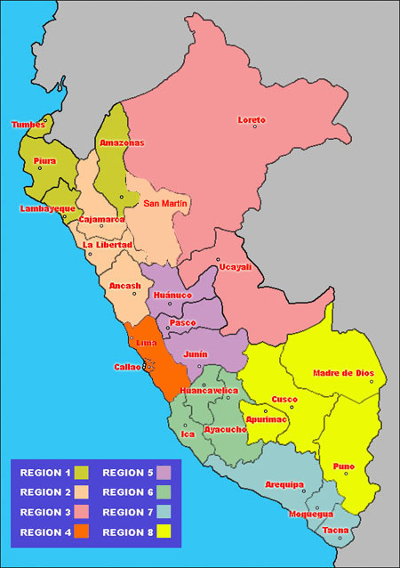

Haga clic en la computadora, el teléfono o la taza de café para ir a una nueva página y leer más sobre el tema:

Haga clic en el croissant para ir a una nueva página y leer más sobre el tema:

Haga clic en la region JUNIN para ejecutar una función JavaScript:
